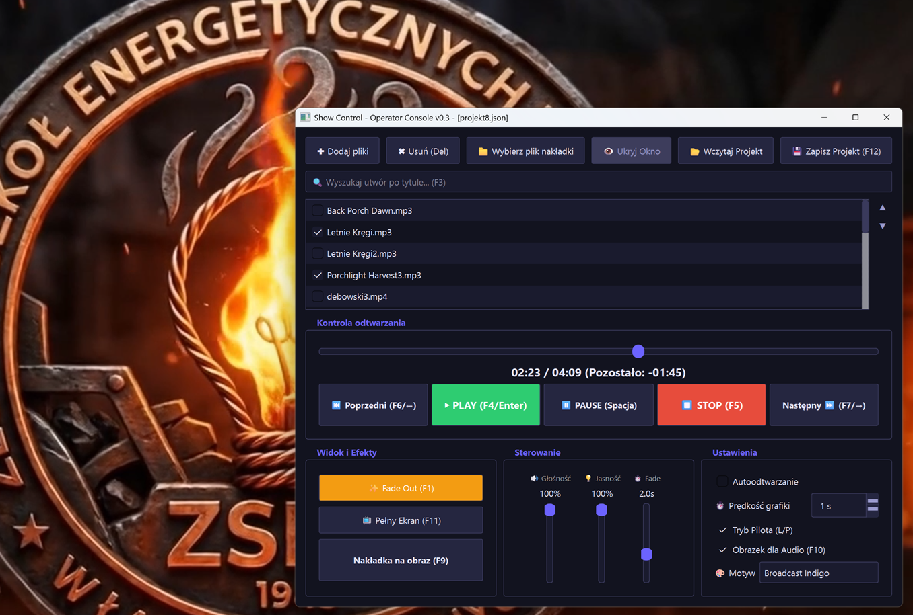

Profesjonalna reżyseria multimediów na żywo
Stabilna konsola operatorska do natychmiastowej projekcji wideo, audio i grafik podczas koncertów, pokazów, prezentacji i eventów na drugim ekranie.

Architektura Stabilności
Zaprojektowana celowo, aby unikać awarii, zawieszeń i opóźnień synchronizacji w krytycznych momentach eventów.
Dwuekranowy Tryb Pracy
Sterowanie listą odtwarzania odbywa się na monitorze operatora, podczas gdy bezramkowe wyjście projekcji blokuje się automatycznie na drugim ekranie (projektor, telewizor, ekran LED).
Potężny Silnik LibVLC
Brak problemów z kodekami. Płynne, akcelerowane sprzętowo odtwarzanie formatów MP4, MKV, MP3, WAV oraz grafik dzięki natywnemu renderowaniu Direct3D11.
Płynne Przejścia (Fade Out)
Zatrzymanie materiału z płynnym ściemnieniem obrazu i wyciszeniem dźwięku w wybranym czasie (0.2s - 2.0s), eliminujące nagłe cięcia dźwięku i czarne błyski.
Zaawansowana Playlista
Przeciąganie plików, wyszukiwanie na żywo, oznaczanie nakładek i pełny zapis projektów do elastycznego formatu JSON.
System Nakładek
Niezależny odtwarzacz w tle umożliwiający ciągłą projekcję logo, banerów sponsorskich lub plansz standby bez zakłócania głównego toku odtwarzania.
Ochrona i Autonaprawa
Blokada przed przypadkowym zamknięciem okna wyjściowego, automatyczne przywracanie ostrości ekranu projekcji i bezbłędna obsługa błędów runtime.
Interaktywna Konsola w Przeglądarce
Wypróbuj interfejs operatora i steruj projekcją na żywo za pomocą skrótów klawiszowych.
Skróty Klawiszowe Operatora
Profesjonalni operatorzy polegają na skrótach klawiszowych. Przetestuj je w symulatorze:
Odtwórz / Pauza
Uruchamia lub wstrzymuje odtwarzanie aktywnego pliku.
Zatrzymaj natychmiast
Natychmiast przerywa projekcję, zeruje czas i czyści ekran.
Płynne wygaszenie
Ściemnia obraz i wycisza dźwięk w czasie wybranego efektu Fade.
Przełącz nakładkę
Włącza lub wyłącza logo wyświetlane w rogu projekcji.
Nawigacja playlisty
Zaznacza następny lub poprzedni plik na liście.
Załaduj plik
Ładuje zaznaczony plik do głównego odtwarzacza.
Cztery Motywy Interfejsu
Dopasuj aplikację i stronę do warunków oświetleniowych panujących w reżyserce.
Broadcast Indigo
Domyślny motyw reżyserskiStudio Dark
Wysoki kontrastRed Night (Stealth)
Tryb nocny chroniący wzrokStudio Light
Jasne pomieszczeniaNajczęściej Zadawane Pytania
Wszystko, co musisz wiedzieć o Show Control przed wydarzeniem.
Aplikacja automatycznie wykrywa podłączone monitory i projektory. Po uruchomieniu projekcji, okno bez obramowania otwiera się na drugim ekranie, podczas gdy panel sterowania pozostaje na pierwszym.
To ten sam silnik, który zasila znany odtwarzacz VLC Media Player. Dzięki temu Show Control odtwarza praktycznie każdy format pliku wideo i audio stabilnie, bez instalacji dodatkowych kodeków.
Show Control stale monitoruje stan okna projekcyjnego. W razie przypadkowego zminimalizowania, utraty ostrości lub zamknięcia przez system, aplikacja natychmiast przywraca okno projekcji do właściwego stanu i pozycji.
Nie, aplikacja jest w pełni przenośna (portable) i uruchamia się z jednego pliku .exe, co ułatwia pracę na różnych komputerach w reżyserce.